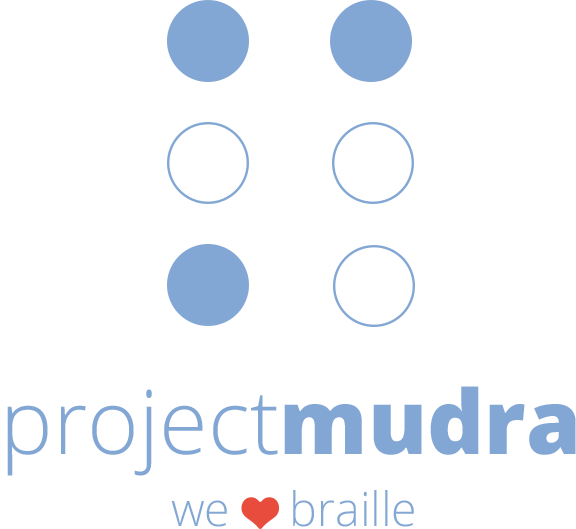
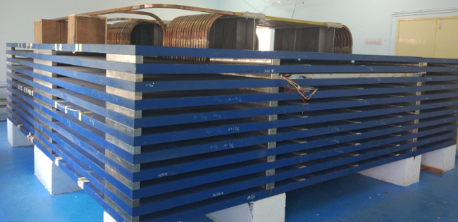
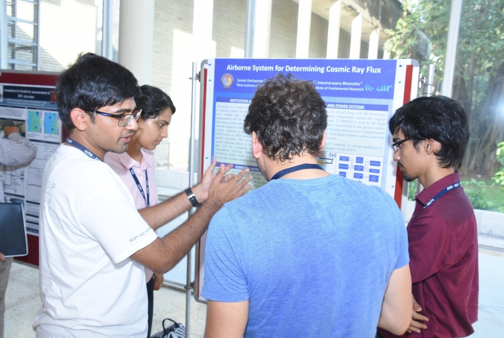
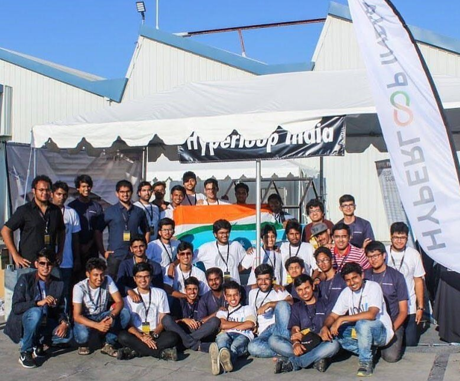
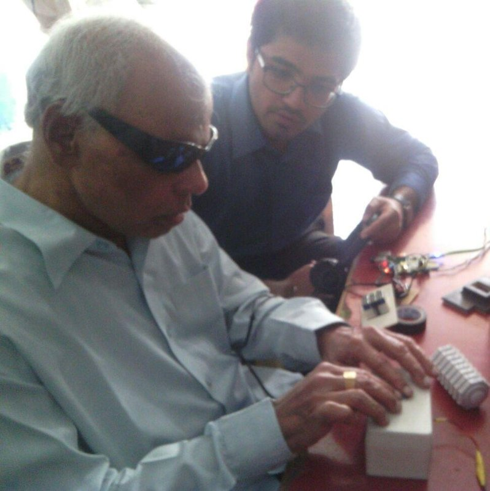

Veto Detector for mini-ICAL
Graduate Research Student (Jul 2018 - current)
A cosmic ray veto detector for veto-ing out triggers generated by charged particles from cosmic ray showers to enable neutrino interaction analysis with the mini-ICAL detector set-up on ground level
The India-based Neutrino Observatory is a multi-institutional project to develop an underground observatory for non-accelarator based high energy and nuclear physics. The ICAL, or Iron Calorimeter detector is used for studying neutrinos. The mini-ICAL is a scaled down version of the ICAL detector. A research-phase proposal to establish the observatory on ground level instead of underground requires an efficient method to prevent charged particles from cosmic rays from reaching the ICAL detector. Hence, a veto detector engulfing the ICAL detector has been proposed. The application draws inspiration from the veto detector for Mu2E detector at Fermilab.
I'm currently developing the GEANT-4 simulations for the veto detector and trying to achieve the efficiency requirement. Further steps include charaterisation of the extruded scintillators coupled with SiPMs, followed by physical verfication of the proposed design in terms of feasibility and efficiency. I will keep updating this space. Please reach out for comments/suggestions.

The mini-ICAL detector
Pixxel
Chief Operating Officer (Aug 2018 - current)
Startup aimed at acquiring, processing and analysing earth imagery by developing and deploying a constellation of nanosatellites
At Pixxel, we aim to develop a constellation of nanosatellites which provides a near real-time access to earth imagery, enabling several industries and communities to become more advanced and efficient in their processes. We aim to launch our proof-of-concept nanosatellite as early as July 2019.
My motivation to work on Pixxel largely stems from the severe gap between the rural India and technologically advanced sector of India. Several industries see India as a potent market and are expanding here, but the country's villages still rely on age-old methods and technologies. A major chunk of the country's rural population is agrarian in nature, hence, a disruption in the agriculture sector can cause a tremendous impact in the lives of the rural society.
Current agricultural practices are highly non-scientific and lead to frequent crop loses, diseases, famines, etc. Advanced satellite imagery and analytics are far out of the reach of farmers. Currently, only banks, insurance and investment funds seem to have access to these. Pixxel will change this by making relaible and affordable imagery and analytics available to the masses via governments and similar organisation. The impact will not be localised to India, but will be global in nature.
The data and analytics generated by Pixxel will also revolutionize several other industries (to list a few: mining, oil, transport, defence) and provide a platform for easier access to satellite imagery, data and analytics for all.
Our constellation will incorporate three imageries: hyperspectral, optical and SAR. We plan to ride on the "new space" tide of space startups, enabling efficient development and affordable launch costs.
Project Apeiro
Team Leader (Oct 2014 - May 2018)
High Altitude Balloon (HAB) borne experiment to determine cosmic radiation flux in lower stratospheric regions of the Earth's atmosphere
As a child, I always wanted to become an astronaut and go to space. When I started studying engineering, I realised I could build something that goes to space. Project Apeiro, was my strive to reach space. My University did not have any active student satellite program and starting a new mission seemed impractical due to several reasons. Firstly, I was a freshman with questionable knowledge about any sort of engineering. Moreoever, the typical duration for a student satellite mission seemed to extend beyond the duration of my engineering studies. Eventually, I started working on a near-space mission, which had similar challenges as a space mission, but seemed more pragmatic. The payload was decided to be a cosmic radiation flux measurement instrument. We used the facilities and expertise of the Dept. of High Energy Physics at TIFR Mumbai to develop the payload. Experts from the Astrosat group adviced us with making our payload flight-worthy. We designed, manufactured, integrated and tested the instrument for the flight.
The flight was successfully conducted from the National Balloon Facility in Hyderabad on 2nd February, 2018, making it the country's first student-led near-space experiment. Further details about the flight, payload and other technical documentation can be found here:
Press Release Design Report Website Facebook page
With Sri. Madhavan Nair, Chairman, ISRO, 2003-09

With Phanindra Sama, Chief Innovataion Officer (CIO), Telangana State

At NSPDI, 2017
At TIFR, Mumbai
 With Smt. Mridula Sinha, Governor, Goa
With Smt. Mridula Sinha, Governor, Goa

Launch on 2/2/18
 Launch on 2/2/18
Launch on 2/2/18
Payload against the moon
Hyperloop India
Team Member (Mar 2017 - Sept 2017)

Project Mudra
Founding Member (Sept 2015 - Apr 2016)
One of the key achievements of the startup, when I was there, is winning the UKTI Tech Rocketships Competition 2016. The team presented the device to the Duke and Duchess of Cambridge during their visit to India in 2016.

GRAPES-3, TIFR
Intern (May 2016 - Jul 2016)
My project focused on developing probabilistic tracks of muons detected in the large area muon detectors. I used CORSIKA to simulate the cosmic ray shower and CERN ROOT to develop an algorithm which could analyse the recorded data and determine the angle of inclination of a cosmic radiation shower and hence help in identifying the origin of the shower.
Github